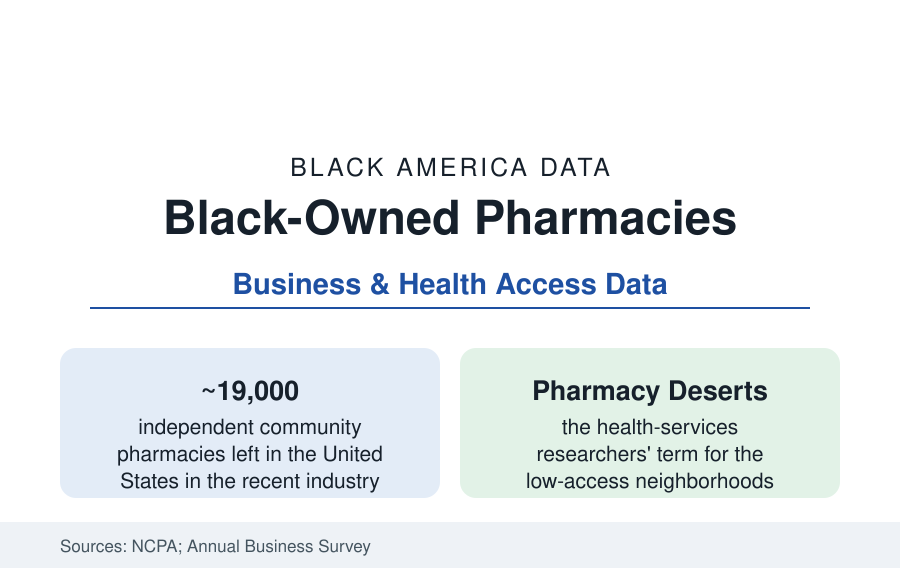

Black Business
Black-Owned Pharmacies: The Corner Where the Neighborhood Gets Its Medicine
Independent pharmacies are closing by the hundreds a year — and the Black-owned counters among them carry health roles no chain replaces. The ownership and closure data.

The independent pharmacy was the Black business district's quiet anchor — the counter where the owner knew every family's prescriptions, extended the credit the neighborhood ran on, and doubled as the block's informal health department. That tier is in structural retreat: America's independent pharmacies have fallen from over 23,000 to roughly 19,000 in a decade of industry counts, squeezed by the pharmacy-benefit managers' reimbursement machinery — and the Black-owned counters, never numerous in the census, stand in the neighborhoods where a closing pharmacy does not mean a longer drive to a chain. It means a pharmacy desert. This article reads the ownership and access file.
The Ownership Census and Its History
The Annual Business Survey's pharmacy slice counts Black-owned pharmacies in the hundreds nationally — a small absolute tier within the independent sector, itself a shrinking share of a market the three chain-and-PBM giants dominate. The history behind the count is richer than it: the segregation era's Black pharmacists ( trained at Howard, Xavier — whose pharmacy school is among the nation's significant producers of Black pharmacists — Florida A&M, and Texas Southern) who could not work the white counters and so built their own, frequently as the best-capitalized Black business on the street (the pharmacy's economics — professional margins, prescription necessity — made it the district's bank-adjacent institution; the National Pharmaceutical Association, founded 1947, organized the profession's Black tier through the whole era). The schools' pipelines persist (the HBCU pharmacy programs still graduate an outsized share of Black pharmacists) while the destination changed: most Black pharmacists now practice inside the chains and health systems — the workforce file — and the ownership tier thins as the founding generation retires into a buyer's market of chains acquiring or simply outlasting them.
The Squeeze: PBMs, Reimbursement, and the Closure Map
The closure economics are documented to the dollar in the industry literature: the pharmacy-benefit managers (three firms processing roughly four-fifths of U.S. claims) setting reimbursement below acquisition cost on a widening share of generic prescriptions in the independent pharmacies' own surveys, the direct-and-indirect remuneration fees clawed back months after dispensing, the patient-steering to PBM-owned mail and chain pharmacies written into plan designs — a vertical-integration file the Federal Trade Commission's interim reports have now documented at the federal level. The closure map that results is not random in the health-services research: the 'pharmacy desert' studies (mapping one-mile-plus pharmacy distances in urban areas) find the deserts concentrated in the segregated Black and Latino neighborhoods of the studied cities — the same tracts as the grocery deserts of the food-access file, frequently the same closing retail strips — with the adherence consequences measured in the claims (medication possession ratios falling with distance, the chronic-disease files of the health section paying the bill downstream). Rural closures draw the second map: the Black Belt counties where the independent was the only pharmacy within twenty miles.
The Counter as Health Infrastructure
What closes with a Black-owned independent is itemized in the services data: the walk-in counsel (the pharmacist as the most accessible clinician in America — the profession's own access statistic counting the average American living within a few miles of a pharmacy and visiting it far more often than any doctor), the vaccinations (pharmacies delivered the majority of COVID vaccinations in the federal program — the independent counters' role in Black neighborhoods' coverage in the program data), the delivery routes to the homebound elders of the caregiving file, the informal credit, the blood-pressure cuff by the register, the owner who notices when a regular's refill lapses. The surviving tier's adaptations are the business story of the current count: the independents converting to service-rich models (compounding, specialty, clinic partnerships, the provider-status billing the state laws are expanding), the buying-group and franchise shields, the pharmacy schools' ownership-track programs aimed at succession, and the policy file (the PBM-reform statutes moving through state legislatures with bipartisan counts, the federal bills in the record) that will set the tier's survival odds.
Reading the Pharmacy Data
Hundreds of stores, a profession's history, a neighborhood's medicine: the Black-owned pharmacy is measured most honestly not by its census share but by its function — the last healthcare counter within walking distance, in the neighborhoods where walking distance decides. The desert maps are the sector's future drawn in advance. Every closure is a dot on them, and every surviving counter is a hold against the map.
More in Black Business
Black-Owned Businesses: Counts, Receipts, and the Representation Gap
About 161,000 Black-owned employer firms and three million solo ventures: how the Census Bureau counts Black business ownership, where firms concentrate, and the gap between population share and business share.
Black Median Net Worth: The Wealth Gap in Federal Reserve Data
The Federal Reserve puts Black median family net worth at $44,900, against $285,000 for White families — about 16 cents on the dollar. The widest gap in economic data.
Black Buying Power: The $1.8 Trillion Consumer Economy
Black buying power is estimated at about $1.8 trillion — larger than the economy of most nations. What the figure measures, who produces it, and what it buys.
Source: National Community Pharmacists Association; National Pharmaceutical Association; U.S. Census Bureau Annual Business Survey; state pharmacy board licensure data; health-services research on pharmacy access.